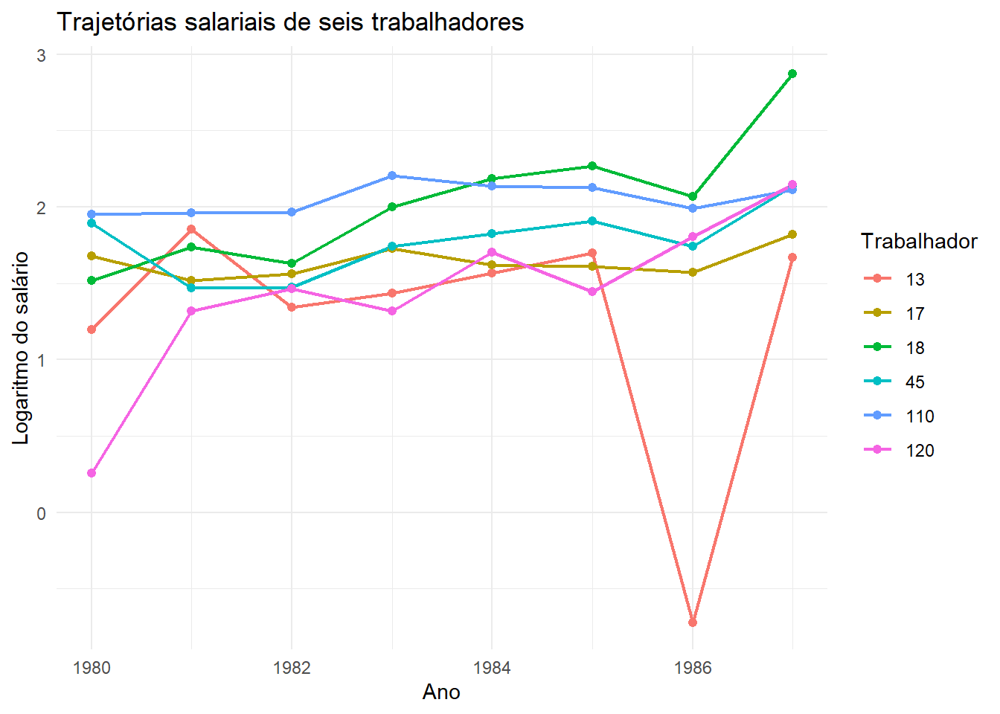

flowchart LR
A["Estrutura<br/>dos dados"] --> B["Corte transversal"]
A --> C["Série temporal"]
A --> D["Painel"]
B --> E["Muitas unidades<br/>em um período"]
C --> F["Uma unidade<br/>em vários períodos"]
D --> G["Muitas unidades<br/>em vários períodos"]
classDef etapa fill:#DCEBDC,stroke:#355E3B,color:#1F3323,stroke-width:1.5px;
class A,B,C,D,E,F,G etapa;
linkStyle default stroke:#355E3B,stroke-width:1.5px;
23 Dados em painel e efeitos fixos
Acompanhando trabalhadores ao longo do tempo
Até aqui, trabalhamos principalmente com dados de corte transversal: diferentes pessoas observadas em um determinado contexto. Em algumas pesquisas, porém, acompanhamos as mesmas unidades ao longo do tempo.
Podemos acompanhar:
- pessoas durante vários anos;
- famílias em diferentes entrevistas;
- empresas ao longo de exercícios contábeis;
- municípios durante sucessivos mandatos;
- países em diferentes períodos.
Essa estrutura é chamada de dados em painel.
NotaObjetivos do capítulo
Ao final deste capítulo, você deverá ser capaz de:
- reconhecer uma base em painel;
- identificar a unidade e o período de observação;
- verificar se o painel é balanceado;
- distinguir variação entre unidades e dentro da mesma unidade;
- preparar uma base com
pdata.frame(); - estimar modelos agrupados, de efeitos fixos e de efeitos aleatórios com
plm(); - interpretar coeficientes de um modelo within;
- compreender por que características constantes no tempo são absorvidas pelos efeitos fixos;
- utilizar o teste de Hausman para comparar efeitos fixos e aleatórios;
- reconhecer os limites básicos dessa estratégia.
23.1 Corte transversal, série temporal e painel
As três estruturas podem ser diferenciadas pela unidade observada e pelo tempo:
NotaCódigo Mermaid do fluxograma
flowchart LR
A["Estrutura dos dados"] --> B["Corte transversal"]
A --> C["Série temporal"]
A --> D["Painel"]
B --> E["Muitas unidades em um período"]
C --> F["Uma unidade em vários períodos"]
D --> G["Muitas unidades em vários períodos"]
classDef etapa fill:#DCEBDC,stroke:#355E3B,color:#1F3323,stroke-width:1.5px;
class A,B,C,D,E,F,G etapa;
linkStyle default stroke:#355E3B,stroke-width:1.5px;Em um painel, cada observação precisa ser identificada por duas informações:
- quem ou o que está sendo observado;
- em qual período a observação foi realizada.
23.2 A base wagepan
Utilizaremos wagepan, do pacote wooldridge. A base acompanha trabalhadores durante oito anos.
Caso o pacote plm ainda não esteja instalado, execute uma única vez:
install.packages("plm")Carregamos os pacotes e selecionamos as variáveis principais:
library(tidyverse)
library(wooldridge)
library(plm)
data(wagepan, package = "wooldridge")
wagepan_modelos <- wagepan |>
select(
nr,
year,
lwage,
exper,
expersq,
educ,
married,
union,
black,
hisp
)
glimpse(wagepan_modelos)Rows: 4,360
Columns: 10
$ nr <int> 13, 13, 13, 13, 13, 13, 13, 13, 17, 17, 17, 17, 17, 17, 17, 17…
$ year <int> 1980, 1981, 1982, 1983, 1984, 1985, 1986, 1987, 1980, 1981, 19…
$ lwage <dbl> 1.1975402, 1.8530600, 1.3444617, 1.4332134, 1.5681251, 1.69989…
$ exper <int> 1, 2, 3, 4, 5, 6, 7, 8, 4, 5, 6, 7, 8, 9, 10, 11, 4, 5, 6, 7, …
$ expersq <int> 1, 4, 9, 16, 25, 36, 49, 64, 16, 25, 36, 49, 64, 81, 100, 121,…
$ educ <int> 14, 14, 14, 14, 14, 14, 14, 14, 13, 13, 13, 13, 13, 13, 13, 13…
$ married <int> 0, 0, 0, 0, 0, 0, 0, 0, 0, 0, 0, 0, 0, 0, 0, 0, 1, 1, 1, 1, 1,…
$ union <int> 0, 1, 0, 0, 0, 0, 0, 0, 0, 0, 0, 0, 0, 0, 0, 0, 0, 0, 0, 0, 0,…
$ black <int> 0, 0, 0, 0, 0, 0, 0, 0, 0, 0, 0, 0, 0, 0, 0, 0, 0, 0, 0, 0, 0,…
$ hisp <int> 0, 0, 0, 0, 0, 0, 0, 0, 0, 0, 0, 0, 0, 0, 0, 0, 0, 0, 0, 0, 0,…As variáveis são:
nr: identificador do trabalhador;year: ano da observação;lwage: logaritmo do salário;exper: experiência potencial;expersq: experiência ao quadrado;educ: anos de escolaridade;married: igual a 1 se casado;union: igual a 1 se sindicalizado;black: igual a 1 para pessoas negras na codificação original;hisp: igual a 1 para pessoas hispânicas na codificação original.
23.3 Como o painel está organizado?
Vamos observar os três primeiros trabalhadores. Primeiro identificamos seus códigos:
primeiros_trabalhadores <- wagepan_modelos |>
distinct(nr) |>
slice_head(n = 3) |>
pull(nr)
wagepan_modelos |>
filter(nr %in% primeiros_trabalhadores) |>
arrange(nr, year) nr year lwage exper expersq educ married union black hisp
1 13 1980 1.1975402 1 1 14 0 0 0 0
2 13 1981 1.8530600 2 4 14 0 1 0 0
3 13 1982 1.3444617 3 9 14 0 0 0 0
4 13 1983 1.4332134 4 16 14 0 0 0 0
5 13 1984 1.5681251 5 25 14 0 0 0 0
6 13 1985 1.6998910 6 36 14 0 0 0 0
7 13 1986 -0.7202626 7 49 14 0 0 0 0
8 13 1987 1.6691879 8 64 14 0 0 0 0
9 17 1980 1.6759624 4 16 13 0 0 0 0
10 17 1981 1.5183982 5 25 13 0 0 0 0
11 17 1982 1.5591905 6 36 13 0 0 0 0
12 17 1983 1.7254101 7 49 13 0 0 0 0
13 17 1984 1.6220223 8 64 13 0 0 0 0
14 17 1985 1.6085882 9 81 13 0 0 0 0
15 17 1986 1.5723854 10 100 13 0 0 0 0
16 17 1987 1.8203338 11 121 13 0 0 0 0
17 18 1980 1.5159627 4 16 12 1 0 0 0
18 18 1981 1.7353791 5 25 12 1 0 0 0
19 18 1982 1.6317437 6 36 12 1 0 0 0
20 18 1983 1.9982288 7 49 12 1 0 0 0
21 18 1984 2.1840143 8 64 12 1 0 0 0
22 18 1985 2.2666621 9 81 12 1 0 0 0
23 18 1986 2.0699439 10 100 12 1 0 0 0
24 18 1987 2.8731608 11 121 12 1 0 0 0Cada trabalhador aparece uma vez por ano. Portanto, a unidade de observação é:
trabalhador em determinado ano.
As colunas nr e year, juntas, devem identificar cada linha:
wagepan_modelos |>
count(nr, year) |>
filter(n > 1)[1] nr year n
<0 linhas> (ou row.names de comprimento 0)O resultado vazio indica que não encontramos combinações duplicadas de trabalhador e ano.
ImportanteUma linha não representa apenas uma pessoa
Em dados de painel, uma pessoa aparece em várias linhas. Por isso, contar linhas não é o mesmo que contar indivíduos.
wagepan_modelos |>
summarise(
linhas = n(),
trabalhadores = n_distinct(nr),
anos = n_distinct(year)
) linhas trabalhadores anos
1 4360 545 823.4 Painel balanceado
Um painel é balanceado quando todas as unidades são observadas no mesmo número de períodos. Vamos contar os anos disponíveis por trabalhador:
periodos_por_trabalhador <- wagepan_modelos |>
count(nr, name = "periodos")
periodos_por_trabalhador |>
count(periodos) periodos n
1 8 545Todos os 545 trabalhadores possuem oito observações. Portanto, wagepan é um painel balanceado.
NotaPainéis não balanceados também são comuns
Em pesquisas reais, pessoas podem deixar a amostra, empresas podem surgir ou encerrar atividades e alguns períodos podem estar ausentes. Um painel não precisa ser balanceado para ser útil, mas sua estrutura deve ser verificada e documentada.
23.5 Visualizando trajetórias individuais
Selecionamos seis trabalhadores apenas para visualizar como o salário varia ao longo do tempo:
trabalhadores_exemplo <- wagepan_modelos |>
distinct(nr) |>
slice_head(n = 6) |>
pull(nr)
wagepan_modelos |>
filter(nr %in% trabalhadores_exemplo) |>
mutate(nr = factor(nr)) |>
ggplot(
aes(x = year, y = lwage, color = nr, group = nr)
) +
geom_line(linewidth = 0.8) +
geom_point(size = 1.8) +
labs(
title = "Trajetórias salariais de seis trabalhadores",
x = "Ano",
y = "Logaritmo do salário",
color = "Trabalhador"
) +
theme_minimal()
O gráfico mostra dois tipos de diferença:
- trabalhadores possuem níveis salariais distintos;
- o salário de cada trabalhador também muda ao longo do tempo.
23.6 Variação entre e dentro das unidades
Uma base em painel contém duas fontes de variação:
- entre trabalhadores: diferenças médias de uma pessoa para outra;
- dentro do trabalhador: mudanças da mesma pessoa ao longo do tempo.
flowchart LR
A["Variação no painel"] --> B["Entre trabalhadores"]
A --> C["Dentro do trabalhador"]
B --> D["Comparar médias<br/>de pessoas diferentes"]
C --> E["Acompanhar mudanças<br/>da mesma pessoa"]
classDef etapa fill:#DCEBDC,stroke:#355E3B,color:#1F3323,stroke-width:1.5px;
class A,B,C,D,E etapa;
linkStyle default stroke:#355E3B,stroke-width:1.5px;
NotaCódigo Mermaid do fluxograma
flowchart LR
A["Variação no painel"] --> B["Entre trabalhadores"]
A --> C["Dentro do trabalhador"]
B --> D["Comparar médias de pessoas diferentes"]
C --> E["Acompanhar mudanças da mesma pessoa"]
classDef etapa fill:#DCEBDC,stroke:#355E3B,color:#1F3323,stroke-width:1.5px;
class A,B,C,D,E etapa;
linkStyle default stroke:#355E3B,stroke-width:1.5px;Podemos verificar quais variáveis mudam dentro de cada trabalhador:
variacao_individual <- wagepan_modelos |>
group_by(nr) |>
summarise(
valores_educ = n_distinct(educ),
valores_black = n_distinct(black),
valores_hisp = n_distinct(hisp),
valores_married = n_distinct(married),
valores_union = n_distinct(union),
.groups = "drop"
)
variacao_individual |>
summarise(
muda_educ = sum(valores_educ > 1),
muda_black = sum(valores_black > 1),
muda_hisp = sum(valores_hisp > 1),
muda_married = sum(valores_married > 1),
muda_union = sum(valores_union > 1)
)# A tibble: 1 × 5
muda_educ muda_black muda_hisp muda_married muda_union
<int> <int> <int> <int> <int>
1 0 0 0 310 246educ, black e hisp são constantes para cada trabalhador nesta base. Já situação conjugal e sindicalização mudam para parte dos indivíduos.
23.7 Preparando o painel com plm
O pacote plm precisa saber qual coluna identifica a unidade e qual identifica o tempo:
wagepan_painel <- pdata.frame(
wagepan_modelos,
index = c("nr", "year")
)
pdim(wagepan_painel)Balanced Panel: n = 545, T = 8, N = 4360O resultado confirma:
- número de trabalhadores, \(n\);
- número de períodos, \(T\);
- número total de observações, \(N\);
- painel balanceado.
23.8 Um modelo agrupado
Começamos ignorando temporariamente a estrutura de painel e reunindo todas as observações em uma única regressão:
\[ lwage_{it}=\beta_0+\beta_1exper_{it}+\beta_2exper_{it}^2 +\beta_3married_{it}+\beta_4union_{it}+u_{it}. \]
modelo_agrupado <- plm(
lwage ~ exper + expersq + married + union,
data = wagepan_painel,
model = "pooling"
)
summary(modelo_agrupado)Pooling Model
Call:
plm(formula = lwage ~ exper + expersq + married + union, data = wagepan_painel,
model = "pooling")
Balanced Panel: n = 545, T = 8, N = 4360
Residuals:
Min. 1st Qu. Median 3rd Qu. Max.
-5.152264 -0.282686 0.026113 0.320718 2.478674
Coefficients:
Estimate Std. Error t-value Pr(>|t|)
(Intercept) 1.11772435 0.03498074 31.9526 < 2.2e-16 ***
exper 0.11402210 0.01057296 10.7843 < 2.2e-16 ***
expersq -0.00635199 0.00072482 -8.7635 < 2.2e-16 ***
married 0.15846038 0.01627633 9.7356 < 2.2e-16 ***
union 0.16120662 0.01793575 8.9880 < 2.2e-16 ***
---
Signif. codes: 0 '***' 0.001 '**' 0.01 '*' 0.05 '.' 0.1 ' ' 1
Total Sum of Squares: 1236.5
Residual Sum of Squares: 1122.1
R-Squared: 0.092526
Adj. R-Squared: 0.091693
F-statistic: 111.009 on 4 and 4355 DF, p-value: < 2.22e-16Esse modelo compara simultaneamente:
- trabalhadores diferentes;
- o mesmo trabalhador em anos diferentes.
Ele não separa diferenças permanentes entre pessoas das mudanças ocorridas ao longo do tempo.
23.9 Características individuais não observadas
Trabalhadores podem possuir características difíceis de medir:
- habilidades;
- preferências profissionais;
- redes de contato;
- condições familiares persistentes;
- características do local de origem.
Se essas características forem relativamente constantes durante o período, podemos representá-las por um componente individual \(a_i\):
\[ lwage_{it}=\beta_1exper_{it}+\beta_2exper_{it}^2 +\beta_3married_{it}+\beta_4union_{it}+a_i+u_{it}. \]
O efeito \(a_i\) varia entre trabalhadores, mas permanece constante ao longo do tempo para a mesma pessoa.
23.10 Modelo de efeitos fixos
O estimador de efeitos fixos utiliza as mudanças ocorridas dentro de cada trabalhador. Em R, especificamos model = "within":
modelo_efeitos_fixos <- plm(
lwage ~ exper + expersq + married + union,
data = wagepan_painel,
model = "within"
)
summary(modelo_efeitos_fixos)Oneway (individual) effect Within Model
Call:
plm(formula = lwage ~ exper + expersq + married + union, data = wagepan_painel,
model = "within")
Balanced Panel: n = 545, T = 8, N = 4360
Residuals:
Min. 1st Qu. Median 3rd Qu. Max.
-4.1726214 -0.1257010 0.0092527 0.1595770 1.4701690
Coefficients:
Estimate Std. Error t-value Pr(>|t|)
exper 0.11684669 0.00841968 13.8778 < 2.2e-16 ***
expersq -0.00430089 0.00060527 -7.1057 1.422e-12 ***
married 0.04530332 0.01830968 2.4743 0.01339 *
union 0.08208713 0.01929073 4.2553 2.138e-05 ***
---
Signif. codes: 0 '***' 0.001 '**' 0.01 '*' 0.05 '.' 0.1 ' ' 1
Total Sum of Squares: 572.05
Residual Sum of Squares: 470.2
R-Squared: 0.17804
Adj. R-Squared: 0.059852
F-statistic: 206.375 on 4 and 3811 DF, p-value: < 2.22e-16
NotaEntenda mais: a transformação within
O modelo original pode ser escrito como:
\[ y_{it}=\beta_1x_{it1}+\cdots+\beta_kx_{itk}+a_i+u_{it}. \]
Calculamos a média temporal para cada unidade:
\[ \bar{y}_i =\beta_1\bar{x}_{i1}+\cdots+\beta_k\bar{x}_{ik} +a_i+\bar{u}_i. \]
Subtraímos a média individual da observação de cada período:
\[ y_{it}-\bar{y}_i =\beta_1(x_{it1}-\bar{x}_{i1})+\cdots +\beta_k(x_{itk}-\bar{x}_{ik}) +(u_{it}-\bar{u}_i). \]
Como \(a_i\) é constante no tempo:
\[ a_i-a_i=0. \]
Definindo as variáveis transformadas por pontos:
\[ \ddot{y}_{it}=y_{it}-\bar{y}_i, \qquad \ddot{x}_{it}=x_{it}-\bar{x}_i, \]
obtemos:
\[ \ddot{y}_{it} =\beta_1\ddot{x}_{it1}+\cdots +\beta_k\ddot{x}_{itk}+\ddot{u}_{it}. \]
O MQO aplicado às variáveis transformadas produz o estimador de efeitos fixos. Essa é a razão pela qual características invariantes desaparecem.
A interpretação muda em relação ao modelo agrupado:
marriedcompara o salário da mesma pessoa nos períodos em que está casada e não casada;unioncompara o salário da mesma pessoa nos períodos em que está e não está sindicalizada;expereexpersqrepresentam a trajetória salarial associada ao avanço da experiência.
Como a variável dependente está em logaritmo, podemos transformar o coeficiente de uma variável binária em mudança percentual. Para union:
beta_union_fe <- coef(modelo_efeitos_fixos)["union"]
100 * (exp(beta_union_fe) - 1) union
8.555039 Esse resultado descreve a diferença salarial estimada para o mesmo trabalhador quando sua situação de sindicalização muda, mantendo as demais variáveis da especificação constantes.
AvisoEfeitos fixos não criam causalidade automaticamente
O modelo controla características individuais que permanecem constantes no tempo. Ele não controla automaticamente fatores não observados que mudam ao longo do tempo e podem estar relacionados simultaneamente ao salário e à sindicalização.
23.11 Modelo de efeitos aleatórios
Efeitos fixos permitem que as características individuais não observadas estejam relacionadas às variáveis explicativas. O modelo de efeitos aleatórios faz uma hipótese adicional: o efeito individual não observado não está correlacionado com as explicativas.
Em R, utilizamos a mesma fórmula e alteramos o argumento para model = "random":
modelo_efeitos_aleatorios <- plm(
lwage ~ exper + expersq + married + union,
data = wagepan_painel,
model = "random"
)
summary(modelo_efeitos_aleatorios)Oneway (individual) effect Random Effect Model
(Swamy-Arora's transformation)
Call:
plm(formula = lwage ~ exper + expersq + married + union, data = wagepan_painel,
model = "random")
Balanced Panel: n = 545, T = 8, N = 4360
Effects:
var std.dev share
idiosyncratic 0.1234 0.3513 0.5
individual 0.1234 0.3514 0.5
theta: 0.6667
Residuals:
Min. 1st Qu. Median 3rd Qu. Max.
-4.508258 -0.150242 0.023883 0.190972 1.499528
Coefficients:
Estimate Std. Error z-value Pr(>|z|)
(Intercept) 1.06772118 0.03055696 34.9420 < 2.2e-16 ***
exper 0.11755462 0.00831286 14.1413 < 2.2e-16 ***
expersq -0.00479350 0.00059332 -8.0790 6.528e-16 ***
married 0.07491062 0.01697797 4.4122 1.023e-05 ***
union 0.10007284 0.01807971 5.5351 3.111e-08 ***
---
Signif. codes: 0 '***' 0.001 '**' 0.01 '*' 0.05 '.' 0.1 ' ' 1
Total Sum of Squares: 645.85
Residual Sum of Squares: 546.49
R-Squared: 0.15384
Adj. R-Squared: 0.15306
Chisq: 791.79 on 4 DF, p-value: < 2.22e-16Ao contrário do estimador within, efeitos aleatórios utilizam tanto:
- mudanças da mesma pessoa ao longo do tempo;
- diferenças entre pessoas.
Isso pode tornar a estimação mais eficiente quando sua hipótese adicional é adequada.
NotaEntenda mais: a hipótese dos efeitos aleatórios
Considere:
\[ y_{it}=x_{it}'\beta+a_i+u_{it}. \]
O estimador de efeitos aleatórios exige que o efeito individual \(a_i\) não esteja correlacionado com as variáveis explicativas em nenhum período. Uma forma de representar essa condição é:
\[ E(a_i\mid x_{i1},x_{i2},\ldots,x_{iT})=0. \]
Se habilidade não observada estiver relacionada, por exemplo, à sindicalização ou à trajetória de experiência, essa condição pode falhar. Nesse caso, efeitos aleatórios incorporam parte dessa diferença não observada aos coeficientes e tornam-se inconsistentes.
Efeitos fixos permitem essa correlação, mas não estimam separadamente coeficientes de variáveis constantes no tempo. Esse é um dos principais contrastes entre os estimadores.
23.12 Comparando os modelos
comparacao_painel <- tibble(
variavel = names(coef(modelo_efeitos_fixos)),
agrupado = coef(modelo_agrupado)[variavel],
efeitos_fixos = coef(modelo_efeitos_fixos),
efeitos_aleatorios = coef(modelo_efeitos_aleatorios)[variavel]
)
comparacao_painel# A tibble: 4 × 4
variavel agrupado efeitos_fixos efeitos_aleatorios
<chr> <dbl> <dbl> <dbl>
1 exper 0.114 0.117 0.118
2 expersq -0.00635 -0.00430 -0.00479
3 married 0.158 0.0453 0.0749
4 union 0.161 0.0821 0.100 As diferenças entre as colunas aparecem porque os modelos utilizam fontes de comparação distintas:
- o agrupado combina diferenças entre pessoas e mudanças no tempo;
- efeitos fixos utilizam a variação dentro de cada pessoa.
- efeitos aleatórios combinam as duas fontes sob uma hipótese mais restritiva sobre o efeito individual.
Não devemos escolher o coeficiente de que mais gostamos. A escolha depende da pergunta e das hipóteses que conseguimos justificar.
23.13 Teste de Hausman
O teste de Hausman ajuda a comparar efeitos fixos e efeitos aleatórios. No R, utilizamos phtest():
teste_hausman <- phtest(
modelo_efeitos_fixos,
modelo_efeitos_aleatorios
)
teste_hausman
Hausman Test
data: lwage ~ exper + expersq + married + union
chisq = 250.26, df = 4, p-value < 2.2e-16
alternative hypothesis: one model is inconsistentA hipótese nula afirma que as diferenças entre os estimadores não são sistemáticas e que o estimador de efeitos aleatórios é consistente. Um valor-p pequeno fornece evidência contra essa hipótese e favorece efeitos fixos.
Nesta aplicação, o valor-p é muito pequeno. Isso sugere que a hipótese adicional exigida pelos efeitos aleatórios não é compatível com os dados e que efeitos fixos são mais adequados entre as duas alternativas avaliadas.
AvisoO teste não escolhe sozinho o modelo
O resultado precisa ser combinado com teoria, conhecimento da base e avaliação das hipóteses. O teste de Hausman não corrige variáveis omitidas que mudam no tempo, erros de mensuração ou causalidade reversa.
NotaEntenda mais: lógica do teste de Hausman
Sob a hipótese nula, efeitos fixos e efeitos aleatórios são consistentes, mas efeitos aleatórios tendem a ser mais eficientes. Sob a alternativa, efeitos aleatórios são inconsistentes, enquanto efeitos fixos permanecem consistentes.
O teste examina a distância entre os vetores de coeficientes, considerando suas matrizes de variância:
\[ H=(\hat{\beta}_{FE}-\hat{\beta}_{RE})' [Var(\hat{\beta}_{FE})-Var(\hat{\beta}_{RE})]^{-1} (\hat{\beta}_{FE}-\hat{\beta}_{RE}). \]
Sob a hipótese nula e condições regulares, a estatística segue aproximadamente uma distribuição qui-quadrado.
23.14 O que acontece com variáveis constantes?
Vamos incluir educ, black e hisp na fórmula de efeitos fixos:
modelo_fe_constantes <- plm(
lwage ~ exper + expersq + married + union +
educ + black + hisp,
data = wagepan_painel,
model = "within"
)
coef(modelo_fe_constantes) exper expersq married union
0.116846692 -0.004300889 0.045303318 0.082087134 Os coeficientes de educ, black e hisp não aparecem. Como essas variáveis não mudam dentro do trabalhador, não há variação within para estimar seus coeficientes separadamente dos efeitos individuais.
ImportanteA variável não deixou de ser importante
Ser absorvida pelo efeito fixo não significa que uma característica seja economicamente irrelevante. Significa apenas que seu coeficiente não pode ser identificado a partir de mudanças dentro da mesma pessoa nesta base.
NotaEntenda mais: hipótese necessária
Para interpretar os coeficientes do modelo de efeitos fixos, precisamos supor que, depois de controlar as explicativas e o efeito individual, mudanças do erro não estejam sistematicamente relacionadas às explicativas em nenhum período. Uma forma de representar essa condição é:
\[ E(u_{it}\mid x_{i1},x_{i2},\ldots,x_{iT},a_i)=0. \]
Essa condição é conhecida como exogeneidade estrita. Ela pode falhar, por exemplo, quando choques salariais alteram decisões futuras de sindicalização ou estado civil.
23.15 Efeitos comuns do tempo
Além das características individuais, todos os trabalhadores podem ser afetados por acontecimentos de determinado ano, como inflação, recessão ou mudanças institucionais.
Podemos incluir indicadores de ano. Como a experiência aumenta de forma perfeitamente alinhada ao tempo para cada trabalhador, retiramos exper dessa especificação e mantemos expersq:
modelo_fe_tempo <- plm(
lwage ~ expersq + married + union + factor(year),
data = wagepan_painel,
model = "within"
)
summary(modelo_fe_tempo)Oneway (individual) effect Within Model
Call:
plm(formula = lwage ~ expersq + married + union + factor(year),
data = wagepan_painel, model = "within")
Balanced Panel: n = 545, T = 8, N = 4360
Residuals:
Min. 1st Qu. Median 3rd Qu. Max.
-4.159280 -0.125273 0.011267 0.154869 1.492088
Coefficients:
Estimate Std. Error t-value Pr(>|t|)
expersq -0.00518550 0.00070444 -7.3612 2.222e-13 ***
married 0.04668036 0.01831044 2.5494 0.01083 *
union 0.08000186 0.01931031 4.1430 3.503e-05 ***
factor(year)1981 0.15119121 0.02194893 6.8883 6.578e-12 ***
factor(year)1982 0.25297086 0.02441846 10.3598 < 2.2e-16 ***
factor(year)1983 0.35444374 0.02924185 12.1211 < 2.2e-16 ***
factor(year)1984 0.49011479 0.03622661 13.5291 < 2.2e-16 ***
factor(year)1985 0.61748227 0.04524351 13.6480 < 2.2e-16 ***
factor(year)1986 0.76549657 0.05612773 13.6385 < 2.2e-16 ***
factor(year)1987 0.92502493 0.06877309 13.4504 < 2.2e-16 ***
---
Signif. codes: 0 '***' 0.001 '**' 0.01 '*' 0.05 '.' 0.1 ' ' 1
Total Sum of Squares: 572.05
Residual Sum of Squares: 468.75
R-Squared: 0.18058
Adj. R-Squared: 0.061271
F-statistic: 83.8515 on 10 and 3805 DF, p-value: < 2.22e-16Os indicadores de ano controlam choques comuns a todos os trabalhadores em cada período.
NotaEntenda mais: por que experiência e ano entram em conflito?
Para cada trabalhador da base, exper aumenta uma unidade a cada ano. Depois de remover as médias individuais, a evolução de exper é perfeitamente alinhada à evolução do calendário. Assim, não conseguimos separar livremente um efeito linear de experiência de um conjunto completo de indicadores de ano.
Isso é um exemplo de colinearidade perfeita: duas informações carregam a mesma variação relevante para a estimação.
23.16 O que aprendemos com o painel?
flowchart LR
A["Identificar<br/>unidade e tempo"] --> B["Verificar<br/>a estrutura"]
B --> C["Separar variação<br/>entre e dentro"]
C --> D["Estimar modelo<br/>agrupado"]
D --> E["Estimar efeitos<br/>fixos"]
E --> F["Estimar efeitos<br/>aleatórios"]
F --> G["Comparar com<br/>Hausman"]
G --> H["Interpretar limites<br/>e hipóteses"]
classDef etapa fill:#DCEBDC,stroke:#355E3B,color:#1F3323,stroke-width:1.5px;
class A,B,C,D,E,F,G,H etapa;
linkStyle default stroke:#355E3B,stroke-width:1.5px;
NotaCódigo Mermaid do fluxograma
flowchart LR
A["Identificar unidade e tempo"] --> B["Verificar a estrutura"]
B --> C["Separar variação entre e dentro"]
C --> D["Estimar modelo agrupado"]
D --> E["Estimar efeitos fixos"]
E --> F["Estimar efeitos aleatórios"]
F --> G["Comparar com Hausman"]
G --> H["Interpretar limites e hipóteses"]
classDef etapa fill:#DCEBDC,stroke:#355E3B,color:#1F3323,stroke-width:1.5px;
class A,B,C,D,E,F,G,H etapa;
linkStyle default stroke:#355E3B,stroke-width:1.5px;Dados em painel permitem acompanhar mudanças dentro da mesma unidade e controlar características não observadas que permanecem constantes no tempo. Essa vantagem é importante, mas não elimina a necessidade de formular cuidadosamente a pergunta, escolher variáveis e discutir as hipóteses.
23.17 Pratique
Utilizando wagepan_modelos:
- conte o número de observações de cada trabalhador;
- verifique se
marriedeunionmudam para todos os trabalhadores; - escolha três trabalhadores e represente suas trajetórias salariais;
- estime um modelo agrupado com
lwage,exper,marriedeunion; - estime a mesma fórmula com efeitos fixos;
- estime a mesma fórmula com efeitos aleatórios;
- compare os coeficientes dos três modelos;
- aplique o teste de Hausman;
- explique por que
educnão pode ser estimada separadamente no modelo within.
DicaCódigo inicial
modelo_agrupado_pratica <- plm(
lwage ~ exper + married + union,
data = wagepan_painel,
model = "pooling"
)
modelo_fe_pratica <- plm(
lwage ~ exper + married + union,
data = wagepan_painel,
model = "within"
)
modelo_re_pratica <- plm(
lwage ~ exper + married + union,
data = wagepan_painel,
model = "random"
)
summary(modelo_agrupado_pratica)Pooling Model
Call:
plm(formula = lwage ~ exper + married + union, data = wagepan_painel,
model = "pooling")
Balanced Panel: n = 545, T = 8, N = 4360
Residuals:
Min. 1st Qu. Median 3rd Qu. Max.
-5.09796 -0.28637 0.02244 0.32557 2.53297
Coefficients:
Estimate Std. Error t-value Pr(>|t|)
(Intercept) 1.3702586 0.0200024 68.5047 < 2.2e-16 ***
exper 0.0247711 0.0028645 8.6475 < 2.2e-16 ***
married 0.1737410 0.0163228 10.6440 < 2.2e-16 ***
union 0.1689991 0.0180689 9.3531 < 2.2e-16 ***
---
Signif. codes: 0 '***' 0.001 '**' 0.01 '*' 0.05 '.' 0.1 ' ' 1
Total Sum of Squares: 1236.5
Residual Sum of Squares: 1141.9
R-Squared: 0.076523
Adj. R-Squared: 0.075887
F-statistic: 120.319 on 3 and 4356 DF, p-value: < 2.22e-16summary(modelo_fe_pratica)Oneway (individual) effect Within Model
Call:
plm(formula = lwage ~ exper + married + union, data = wagepan_painel,
model = "within")
Balanced Panel: n = 545, T = 8, N = 4360
Residuals:
Min. 1st Qu. Median 3rd Qu. Max.
-4.14628 -0.12503 0.01232 0.16205 1.48094
Coefficients:
Estimate Std. Error t-value Pr(>|t|)
exper 0.0598672 0.0025835 23.1726 < 2.2e-16 ***
married 0.0610384 0.0182929 3.3367 0.0008558 ***
union 0.0837910 0.0194140 4.3160 1.629e-05 ***
---
Signif. codes: 0 '***' 0.001 '**' 0.01 '*' 0.05 '.' 0.1 ' ' 1
Total Sum of Squares: 572.05
Residual Sum of Squares: 476.43
R-Squared: 0.16715
Adj. R-Squared: 0.047646
F-statistic: 255.026 on 3 and 3812 DF, p-value: < 2.22e-16summary(modelo_re_pratica)Oneway (individual) effect Random Effect Model
(Swamy-Arora's transformation)
Call:
plm(formula = lwage ~ exper + married + union, data = wagepan_painel,
model = "random")
Balanced Panel: n = 545, T = 8, N = 4360
Effects:
var std.dev share
idiosyncratic 0.1250 0.3535 0.504
individual 0.1230 0.3507 0.496
theta: 0.6643
Residuals:
Min. 1st Qu. Median 3rd Qu. Max.
-4.476189 -0.153051 0.025676 0.197004 1.513174
Coefficients:
Estimate Std. Error z-value Pr(>|z|)
(Intercept) 1.2360910 0.0224837 54.9771 < 2.2e-16 ***
exper 0.0533713 0.0025013 21.3378 < 2.2e-16 ***
married 0.0916450 0.0169788 5.3976 6.753e-08 ***
union 0.1029696 0.0182100 5.6546 1.562e-08 ***
---
Signif. codes: 0 '***' 0.001 '**' 0.01 '*' 0.05 '.' 0.1 ' ' 1
Total Sum of Squares: 646.94
Residual Sum of Squares: 555.83
R-Squared: 0.14084
Adj. R-Squared: 0.14025
Chisq: 714.072 on 3 DF, p-value: < 2.22e-16phtest(modelo_fe_pratica, modelo_re_pratica)
Hausman Test
data: lwage ~ exper + married + union
chisq = 136.4, df = 3, p-value < 2.2e-16
alternative hypothesis: one model is inconsistentCom este capítulo, encerramos o percurso que parte da descrição e chega à estimação de modelos. Na Parte VI, retomaremos operações já utilizadas ao longo da apostila para aprender a automatizá-las, validá-las e transformá-las em rotinas reutilizáveis.